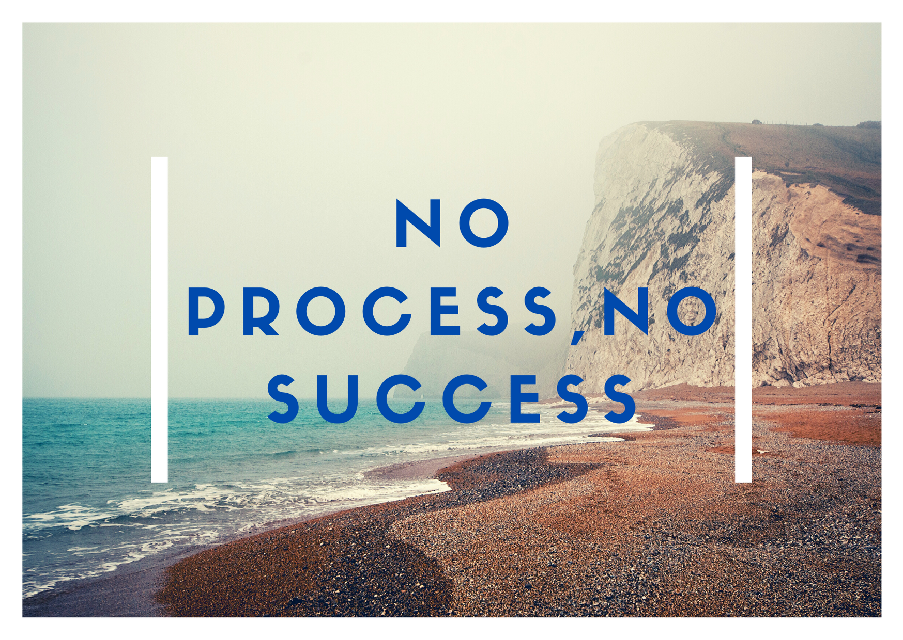

No Process, No Success
This article is an extract from the book title DONT JUMP THE QUEUE. Writen by Stewart Ezekiel and Co-authored by Fenibo Fubara[No process, No success]

#1. The Problem
The problem most times is that we focus on people’s glory and don’t bother to listen or find out about their life story and surmount the will power to learn from their life story- Stewart As we get closer and deeper into the millennial, into a superfast changing and evolving world, people tend to see, judge, evaluate and treat other humans like they will do a robot machine, and so they unconsciously place expectations on people just like they will to machines .Even nine months now seem like a century to aged Nigerian parents who has quickly forgotten how much they spent inside their own mother’s womb all because they just need to see a grandchild. Everyone wants a quick fix ,a fast food and even a quickie by the corner. Promise a student of mine while on a forty minutes length of call casually talked to me about how his parents as caring and desperate as they were would mount pressure on him even as an undergraduate of computer science expressing their fears and demanding he go look for a paying job to do during the long semester break rather than encouraging him to actualize his capacity building adventure while also working on a personnel web based project he was doing..
Humans are not machines. Machines are meant to deliver instant or near instant result without thinking of the processes. Humans go through the rudiments of the processes. They do so and input the processes into the machine. If a machine fails to deliver then it is either faulty, wrongly designed or its lifespan has expired and so should either be taken for a fix, redesigned or discarded. When a human being does not show successful result at any level, nothing is fundamentally wrong with the person. What he or she needs is either more time exposure to the right information, relationships and environmental condition.
There is nothing that is Impossible if you put your mind to it.
Often towards the mid of the first semester when results were finally uploaded online for students to view. I find tom sitting outside in a cemented chairs on the path way to the university library, most times with his hands folded and his bag on his back with this depressed look. I would walk a few steps closer to where he sat, pat him at the back and mutter a few words in Pidgin English saying
Tom_b, no worry, next semester day
#2. An Instance
Nothing happens by chance and no one suddenly rises to the top, not even the sun. There have never been any success recorded without processes. A few instances could reveal this. The man Jesus Christ who is believed to be the savior of the world by many was not declared to be the savior of the world or as the son of God from his childhood. The bible recorded that he learnt Obedience through series of sufferings. Permit me to derive that it was after he had gone through all the processes of obedience, hardship, following his parents to the temple, studying the scriptures, engaging intelligently with the scribes and Pharisees in the temple, overcoming the series of temptations offered by his whole environment and the devil that he was finally declared of God by the holy spirit saying This is my beloved son in whom I am well pleased…. This declaration would not have been if he hadn’t passed through the process successfully. By the way, he spent about a 30 years to go through all the processes and preparations which he displayed in style for about 3 years. Preparation comes before performance- SuperManic.
The Chinese Bamboo Tree
Like any plant, growth of the Chinese Bamboo Tree requires nurturing – water, fertile soil, sunshine. In its first year, we see no visible signs of activity. In the second year, again, no growth above the soil. The third, the fourth, still nothing. Our patience is tested and we begin to wonder if our efforts (caring, water, etc.) will ever be rewarded. And finally in the fifth year – behold, a miracle! We experience growth. And what growth it is! The Chinese Bamboo Tree grows 80 feet in just six weeks! But let’s be serious, does the Chinese Bamboo Tree really grow 80 feet in six weeks? Did the Chinese Bamboo Tree lie dormant for four years only to grow exponentially in the fifth? Or, was the little tree growing underground, developing a root system strong enough to support its potential for outward growth in the fifth year and beyond? The answer is, of course, obvious. Had the tree not developed a strong unseen foundation it could not have sustained its life as it grew. In 1993 a psychology paper “The Role of Deliberate Practice in the Acquisition of Expert Performance” was released. It suggested the principle of 10,000 hours of work to master any skill in life. This means a 5hrs 30mins input of deliberate practice into mastering any skill for a period of 5 years makes you a master in that field. The Chinese bamboo tree shows how nature even complies to this myth.
#3.The Model
I will tell you what true success should be and why it requires all the process it demands .I will do so from a lesson i learnt while in university. I never did chemical modelling in school but numerous discussions about it thought me a lesson of life. In science, every physical and chemical process that often repeats or reproduces itself in a certain uniform or even different order can be studied and developed into a mathematical equation. Now the equation having successfully been modelled can offer solution to such problems associated with it’s core essence any day any time and under any condition For example; The equation below is a common equation in engineering which is often used as a model to find a solution revolving around force, mass and acceleration. So whenever the amount of force required to move an object of mass (M) and acceleration (A) is been required, a simple call to this model solves the problem F=MA What to bear in mind however is the whole process it took to arrive at the model that works. This processes often include making of basic assumptions, applying first principles, applying basic laws of science, development of the knowledge of physical properties and characteristics of the component involved, testing and retesting the model with various data. All these and more are the processes that it takes to arrive at a proven model that replicates correct results every time. True success gotten from due processes makes a model out of a man. He produces results not by fluke. He becomes a man who produces his results in season and out of season. Geographical differences not withstanding because the laws and principles of success are all universal
#4 THE SMART ONE
The heights attained by great men were not achieved by sudden flight, but they while others slept toiled ever upward through the night. Though the processes to success are basic requirement and the time for the processes becomes tiring and too long, mentorship is one thing that could facilitate your quick arrival to your destination. Principles of life, lessons learnt from failures, knowledge gotten from long months of study and research can simply be inherited and applied for a faster ride in life. Knowledge, Virtue and guidance can be inherited on the platform of mentorship Mentors provide guidance and Information which are key to early rising in life.
#5 THE FINAL WORD
What you achieve is only a fruit of what you will become – Supermanic. When you see the fruit (achievements) of others, quickly remind yourself of the responsibility to wake up and take up the daily rituals that is needed to becoming the person who naturally produces such fruits. The giant in you still lies asleep. Tap him, wake him up, the world must not miss your essence. Let the dream of your heart be stronger than any seemingly external distraction, be it family, relationships, or money. If you fail no one gets to know about you If you build your results on sandy foundations and later fail in life the society will mock you. If you build capacity and succeed at the right time, the world around you celebrates. No one should be given the room to put you under any form of pressure. A man under pressure has lost his soul. Those who tend to put you under pressure do so to compensate their own personal flaws. Stand heads high with your goals, ever in mind never weary, never give up until the bamboo tree in you springs up.
SUPERMANIC QUESTIONS
What would you have been chasing if you had the whole resources and time to do so? If you were to die today what would be the things you need to do and people you will need to talk to before you exit? If you had God appeared in form of a human what exactly would you demand for in a minute? The answers to these questions will let you know what you ought to be pursuing in life and what things and people are most important to you.THE SUPERMANIC CONCIOUSNESS
Once you make a decision, the universe conspires to make it happen. Never throw a question to your environment. It was made for you. The universe is only waiting to get commands and answers from you. The forces that are with you are a far greater than those against you.